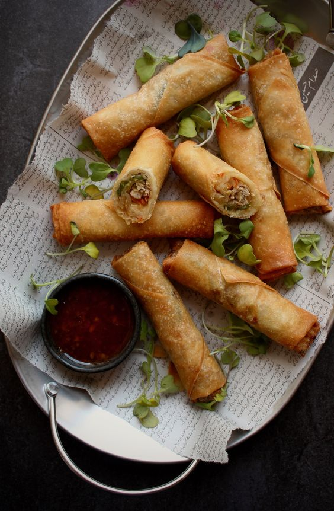
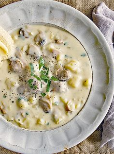
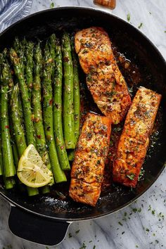
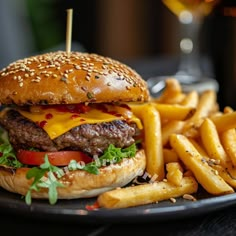
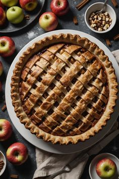
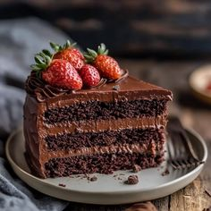
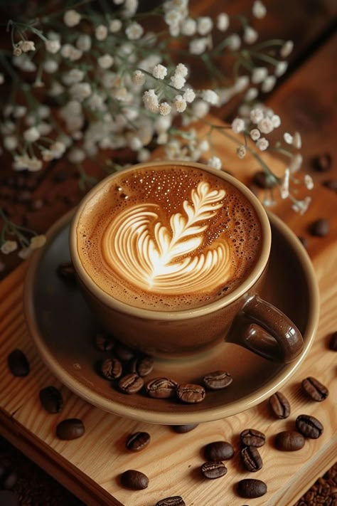
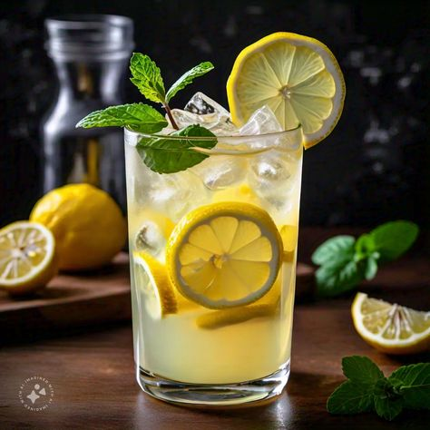
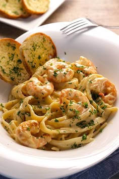

Welcome!
Kiri's Kitchen is a cozy family-owned restaurant nestled in the heart of San Francisco. Established in 2015, it has been serving a fusion of traditional and modern American cuisines, providing a warm, welcoming ambiance that mirrors the comfort found in a family kitchen. The restaurant values fresh, locally sourced ingredients, community engagement, and providing a delightful dining experience that goes beyond just the meal. Kiri believes in creating a place where every diner fee/s at home while enjoying hearty, delicious meals.
APPETIZERS

Vegetable Spring Rolls are crispy rolls that are filled with fresh veggies and served with a sweet chili dip
($6.95)

The Clam Chowder Soup is a creamy New England-style chowder that is rich with clams and potatoes
($7.95)
MAIN COURSE

The Grilled Salmon is a fan favorite with the freshly grilled salmon being served with a lemon-butter sauce, seasonal vegetables, and mashed potatoes
($18.95)

It is hard to pass up the Classic Cheeseburger though with its juicy beef patty served with cheddar cheese, lettuce, tomatoes, and house sauce. Don't forget the side of fries!
($14.95)
DESSERT

The Apple Pie is a traditional apple pie topped with a scoop of vanilla ice cream and drizzled with caramel sauce
($6.95)

The Chocolate Lava Cake is to die for as it is served warm with a molten center and a dollop of whipped cream on top
($7.95)
DRINKS

The House Blend Coffee is a rich and smooth coffee blend that is freshly brewed when ordered
($3.50)

The Mint Lemonade is a refreshing take on lemonade with a hint of mint
($4.50)
WEEKLY SPECIAL!

Every Monday is Pasta Night at Kiri's Kitchen where you can enjoy any pasta dish at a $2 discount.
Available in the Winter is her Winter Squash Soup, a creamy squash soup topped with roasted pumpkin seeds
($7.95)

Available in the Summer in her Summer Berry Salad which includes mixed greens with fresh berries, goat cheese, and a raspberry vinaigrette
($10.95)
Reviews
Over the years Kiri's Kitchen has received wonderful reviews and ratings which Kiri would like featured on the web page.
Sara L left a 5-star review and said "The atmosphere is so warm and inviting, and the food is absolutely delicious! The grilled salmon is a must-try!"
Mike D left a 4-star review and remarked, "I love the variety in the menu. The seasonal specials keep me coming back. Kiri's Kitchen has become our weekly dining spot."
Emma R. left a 5-star review and attested, "The apple pie is the best I've ever had. It's the perfect blend of sweet and tart, and the crust is just right. A cozy place with friendly staff!"